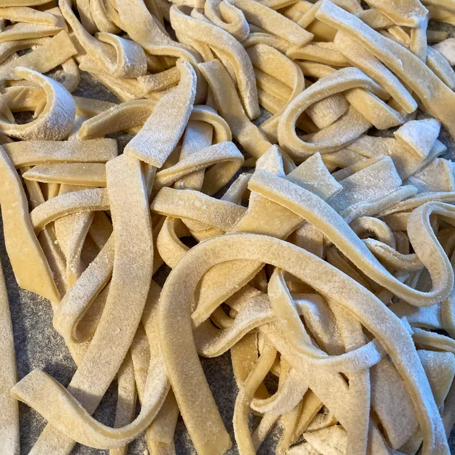

Noodles

Description
This is a recipe for healthy egg noodles.
It originated from China and Vietnam but has enjoyed a lot of popularity in the western part of the world
Ingredients
- Flour
- Salt
- Eggs beaten
- Milk
- Butter
Steps
- Beat eggs
- Mix the eggs with milk, butter, salt and the flour to form a dough
- Knead dough till it's smooth
- Let the dough rest in a covered space for 7 minutes
- Roll and cut dough into 8 equal parts
- Air dry the mixture
- Boil the mixture in salted water for 30 minutes